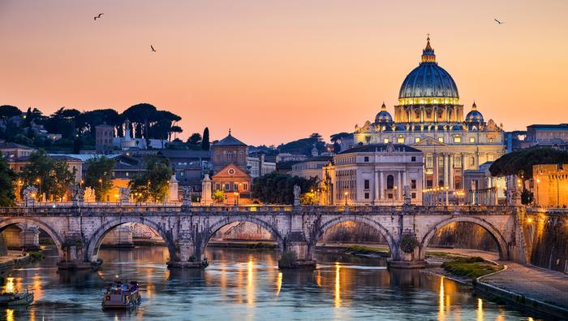

Rzym
Rzym to jedno z najpiękniejszych i najbardziej romantycznych miejsc na ziemi, które zachwyca turystów na każdym kroku. Majestatyczne Koloseum, przepiękna Fontanna di Trevi, starożytny Panteon czy urokliwe Schody Hiszpańskie prowadzące do kościoła Trinitia dei Monti to tylko nieliczne z ciekawych miejsc, które warto zobaczyć w Rzymie
Wyjątkowy klimat Wiecznego Miasta można odkrywać spacerując wąskimi uliczkami lub smakując specjały włoskiej kuchni. Każdy przynajmniej raz w życiu powinien wybrać się tu na wycieczkę, w końcu wszystkie drogi prowadzą do Rzymu.
Nic innego tak nie zachwyca w Rzymie, jak obszar leżący na południe od Wzgórza Kapitolińskiego, w który najchętniej zapuszczają się turyści szukający oddechu prawdziwej historii. Antyczną atmosferę można poczuć spacerując po Forum Trajana – zespole bazylik, pomników, mieszkań i sklepów, wytyczonych w czasach, gdy Rzym przechodził apogeum rozwoju, natomiast miejscem z imponującymi ruinami, będącym symbolem kultury śródziemnomorskiej, owianym romantyczną aurą jest Forum Romanum. Wyobraźnię warto uruchomić spacerując po najstarszej ulicy Rzymu – Via Sacra, którą cesarze i generałowie zmierzali z procesjami dziękczynnymi do świątyni Junony. Łuk Septymiusza Sewera, mównica Rostra, Basilika Julia, świątynia Kastora i Polluksa czy tzw. bazylika Konstantyna to tylko niektóre zabytki na Forum wśród których turyści mogą poczuć się wyjątkowo.
Nikogo nie dziwi fakt, że jednym z miejsc, w którym zawsze można spotkać wielu turystów jest Koloseum – najbardziej znany w Rzymie pomnik starożytności od zawsze fascynujący podróżników, naukowców i historyków sztuki, który stał się wzorem dla stadionów piłkarskich i wielu innych konstrukcji.
